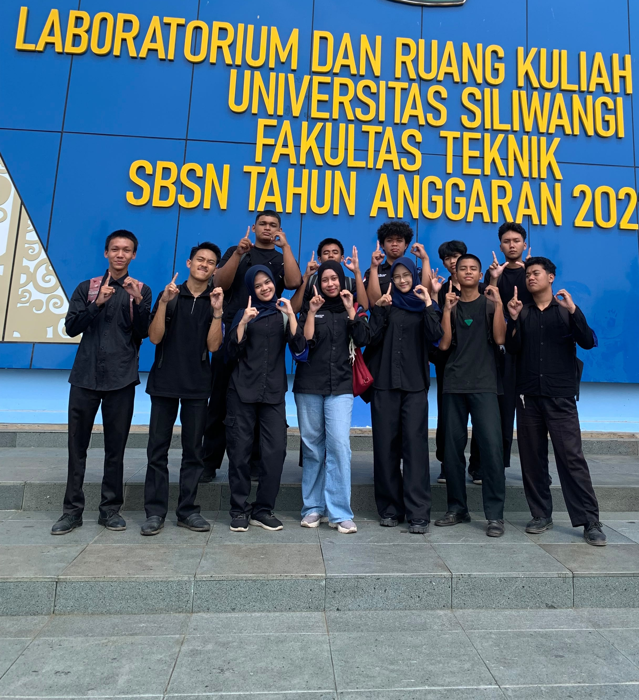

Satu kelompok, banyak cerita.

Tentang kami
Kelompok 10 adalah sebuah kelompok yang dibentuk saat kegiatan PPKM, dengan tujuan untuk membentuk solidaritas dan kerja sama yang kuat diantara para anggotanya

Kelompok 10 adalah sebuah kelompok yang dibentuk saat kegiatan PPKM, dengan tujuan untuk membentuk solidaritas dan kerja sama yang kuat diantara para anggotanya